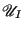

Next: The Method of Overlapping Up: Free Energy Methods Previous: Excess Chemical Potential via
Thermodynamic integration is a conceptually simple, albeit expensive, way to calculate free energy differences from MC or MD simulations. In this example, we will consider the calculation (again) of chemical potential in a Lennard-Jones fluid at a given temperature and density, a task performed very well already by the Widom method (so long as the densities are not too high.) More details of the method can be found in the work of Tironi and van Gunsteren [43].
We begin with the relation derived in the book for a free energy
difference,
, between two systems which are identical
(same number of particles, density, temperature, etc.) except
that they obey two different potentials. System I obeys
 and System II
. To measure this
free energy difference, we must integrate along a reversible path from
I to II. So let us suppose that we can write a “metapotential” that
uses a switching parameter,  , to measure distance along this
path. So, when
, we are in System I, and when
we
are in System II. One way we might encode this (though this is not
necessarily a general splitting, as we shall see below) is
, to measure distance along this
path. So, when
, we are in System I, and when
we
are in System II. One way we might encode this (though this is not
necessarily a general splitting, as we shall see below) is
| (317) |
Let us consider the canonical partition function for a system obeying a general potential :
| (318) |
| (319) | |||
| (320) | |||
| (321) |
The free energy difference between I and II is given by:
| (322) |
To compute
 , we imagine two systems: System I has
, we imagine two systems: System I has  “real” particles, and 1 ideal gas particle, and system II has
“real” particles, and 1 ideal gas particle, and system II has  real particles. The two free energies can be written:
real particles. The two free energies can be written:
| (323) | |||
| (324) |
For large values of  , we see that
. So, we have another route to compute
, we see that
. So, we have another route to compute
 .
First, we tag a particle , call it the
“
.
First, we tag a particle , call it the
“ -particle”, and apply the following modified potential to
its pairwise interactions:
-particle”, and apply the following modified potential to
its pairwise interactions:
| (326) |
Next, we conduct many independent MC simulations at various values of
 and a given value of
and a given value of  and
and  , generating for each
a table of
vs.
, generating for each
a table of
vs.  which can be integrated to yield a single value for
which can be integrated to yield a single value for
 . The code
. The code mclj_ti.c implements this sampling when
a value for  is specified. To demonstrate its use to compute
is specified. To demonstrate its use to compute
 , the following protocol was used:
, the following protocol was used:
scipy.integrate.simpson to numerically integrate
vs.
This turns out to be an expensive way to compute the
chemical potential for a Lennard-Jones fluid, compared to the Widom
method (Sec. 9.1) or grand canonical MC (Sec. 5.1), for at least low to moderate densities. At very high densities, however, particle insertion moves in grand canonical and Widom-method simulations become difficult. Fig. 40 shows a plot of
vs.  for various densities, all at
for various densities, all at  = 3.0 (left), with values of
= 3.0 (left), with values of
 found from integrating those curves shown together with the data from Fig. 39 showing
found from integrating those curves shown together with the data from Fig. 39 showing
 from both grand canonical MC and the Widom method.
from both grand canonical MC and the Widom method.
|
|
The curves of
vs  are not completely noise-free, but
integrating each of these curves to produce a single value of
are not completely noise-free, but
integrating each of these curves to produce a single value of
 produces values that are not too off from the grand canonical and Widom-method simulations.
produces values that are not too off from the grand canonical and Widom-method simulations.
cfa22@drexel.edu